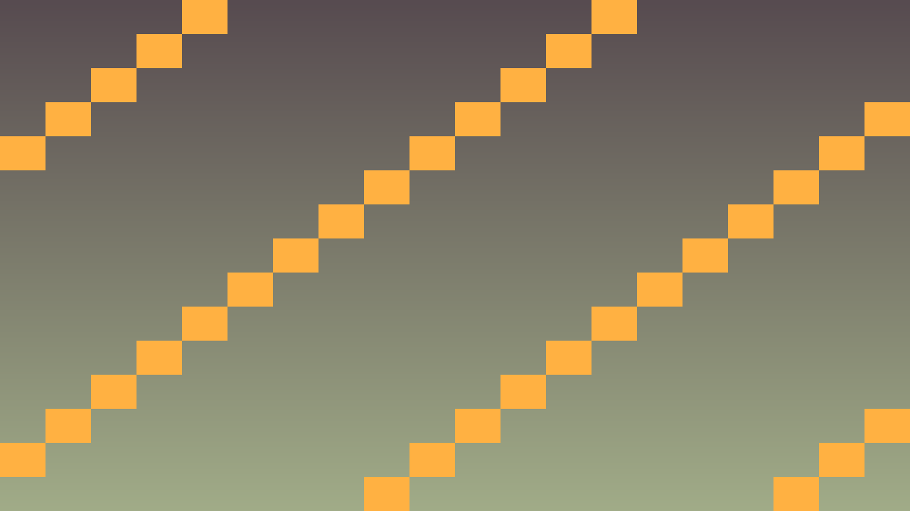

4.3 State machines (stāvokļu mašīna) AI (mākslīgais intelekts) uzvedībai
Stundas uzdevums: Implementēt AI (mākslīgais intelekts) ar state machine (stāvokļu mašīnu) reālistiskai uzvedībai.
80 min plāns: Teorija un paraugs (~10 min) · 1. uzdevums (~20 min) - izveido state (stāvokļu) enum (uzskaitījuma tips) un pārslēgšanu · 2. uzdevums (~25 min) - pievieno pārejas noteikumus · 3. uzdevums (~20 min) - iztestē visus state (stāvokļus) · Iesniegšana (~5 min).
Pirms sāc: atver savu project (projektu) ar ienaidnieku. State machine (stāvokļu mašīna) nozīmē vienu vienkāršu noteikumu: ienaidnieks vienā brīdī var būt tikai vienā state (stāvoklī).
Teorija: State machine (stāvokļu mašīna) konceptu
State machine (stāvokļu mašīna) ir AI (mākslīgais intelekts) design pattern (dizaina paraugs), kur object (objekts) vienlaikus ir vienā no diskrētiem state (stāvokļiem) un pāriet starp tiem pēc noteikumiem.
using Godot;
public enum EnemyState
{
Idle, // gaida
Patrol, // staigā
Chase, // dzenas
Attack, // uzbrūk
Dead
}
public partial class Enemy : CharacterBody2D
{
private EnemyState state = EnemyState.Idle;
private Vector2 patrolTarget;
private Player player;
public override void _PhysicsProcess(double delta)
{
switch (state)
{
case EnemyState.Idle:
if (PlayerVisible()) state = EnemyState.Chase;
else if (IdleTooLong()) state = EnemyState.Patrol;
break;
case EnemyState.Patrol:
MoveToPatrolTarget();
if (PlayerVisible()) state = EnemyState.Chase;
break;
case EnemyState.Chase:
MoveToward(player.Position);
if (InAttackRange()) state = EnemyState.Attack;
else if (!PlayerVisible()) state = EnemyState.Idle;
break;
case EnemyState.Attack:
AttackPlayer();
if (!InAttackRange()) state = EnemyState.Chase;
break;
}
}
}Kā šo izmantot project (projektā)
Atceries: ar redzamu efektu editor (redaktorā) nepietiek. Paskaidro, kura C# class (klase) glabā state (stāvokli), kura method (metode) to maina un kā Godot node (mezgls) structure (struktūra) izmanto šo code (kodu).
Pārbaudi: C# code (kodā) pamatoti izvēlēti List (saraksts), Dictionary (vārdnīca) vai HashSet (jaucējkopa), AI (mākslīgais intelekts) state (stāvokļi) ir skaidri, un sarežģītākas system (sistēmas) var profilēt vai atkļūdot.
public class AiDataCheckpoint
{
public string Lesson = "4.3 State machines AI uzvedībai";
public bool UsesCSharp = true;
public bool ChoosesContainer = true;
public bool SeparatesAiState = true;
public bool HandlesRemovalSafely = true;
}Praktiskie uzdevumi
1. uzdevums -
Izveido state (stāvokļu) enum (uzskaitījuma tips) un pārslēgšanu
Beigās ienaidnieks zinās, kurā state (stāvoklī) tas atrodas.
- Ieraksti
private enum EnemyState { Idle, Patrol, Chase, Attack, Dead }. - Pievieno class (klasei) field (lauku)
private EnemyState state = EnemyState.Idle;. - Uzraksti
_PhysicsProcessmethod (metodē)switch (state) { ... }. - Pievieno katram stāvoklim savu
case(izvēles gadījums) ar output (izdruku) unbreak;. - Būvē un palaid - jāizdrukājas tikai
Idle. - Nomaini sākuma state (stāvokli) uz
Patrolun palaid vēlreiz. - Pieraksti, kāpēc vienlaikus izdrukājas tikai viens state (stāvoklis).
Gatavs, kad: Output (izvade) panel (panelī) atkārtojas tikai viena state (stāvokļa) nosaukums, nevis visi pieci.
2. uzdevums -
Pievieno pārejas noteikumus
Beigās ienaidnieks pats pārslēgsies starp state (stāvokļiem).
- Uzraksti method (metodi)
private void ChangeState(EnemyState newState), kas izdrukā pāreju. - Izrēķini katrā frame (kadrā) attālumu līdz spēlētājam ar
Position.DistanceTo(player.Position). - Pārslēdz uz
Chase, ja attālums ir mazāks par 300. - Pārslēdz uz
Attack, ja attālums ir mazāks par 50. - Pārslēdz atpakaļ uz
Patrol, ja attālums pārsniedz 400. - Būvē un pastaigā ar spēlētāju tuvāk un tālāk.
- Pieraksti, kāpēc atgriešanās slieksnis (400) ir lielāks par dzīšanās slieksni (300).
Gatavs, kad: pieejot tuvāk, ienaidnieks pāriet CHASE un ATTACK, bet aizejot - atgriežas PATROL.
3. uzdevums -
Iztestē visus state (stāvokļus)
Beigās tu būsi pārliecinājies, ka neviens state (stāvoklis) neiestrēgst.
- Pieraksti tabulu ar visiem pieciem state (stāvokļiem).
- Atzīmē katram, no kura state (stāvokļa) tajā var nokļūt.
- Pārbaudi spēlē katru pāreju un atzīmē tabulā, vai tā notika.
- Atrodi state (stāvokli), no kura nevar izkļūt, ja tāds ir.
- Pārbaudi, kas notiek, kad ienaidnieka HP (dzīvības punkti) nokrīt līdz nullei.
- Pievieno pāreju uz
Deadun pārliecinies, ka no tā vairs neizkļūst. - Pieraksti, kurš state (stāvoklis) ir gala state (stāvoklis).
Gatavs, kad: tabulā katrai pārejai ir atzīme, un no Dead state (stāvokļa) ienaidnieks vairs neatgriežas.
Papildu uzdevums - Pievieno state (stāvokļa) timer (taimeri)
Ja pamatdarbs ir gatavs, neļauj state (stāvokļiem) mainīties pārāk bieži.
- Pievieno field (lauku)
double state_time = 0.0;. - Palielini to katrā frame (kadrā) ar
delta. - Atiestati to uz nulli katrā
ChangeStateizsaukumā. - Neļauj mainīt state (stāvokli), ja
state_timeir mazāks par 0.3. - Pārbaudi, ka ienaidnieks vairs nemirgo starp diviem state (stāvokļiem).
Gatavs, kad: stāvot tieši uz sliekšņa robežas, ienaidnieks vairs nemaina state (stāvokli) vairākas reizes sekundē.
Ko sagatavo
Stundas mērķis: Tavam ienaidniekam ir strādājoša state machine (stāvokļu mašīna) ar pieciem state (stāvokļiem), pārejas notiek pēc attāluma līdz spēlētājam, un Dead ir gala state (stāvoklis), no kura nevar izkļūt.
GitHub repository (krātuvē) jābūt:
- File (fails)
Enemy.csarenum(uzskaitījuma tips) unswitch(izvēle pēc vērtības). - README.md ievietota video link (saite) vai screenshot (ekrānuzņēmumu) sērija repository (krātuvē), kurā redzamas pārejas PATROL -> CHASE -> ATTACK.
- README.md tabula ar atzīmētām pārbaudītajām state (stāvokļu) pārejām.
- README.md: kāpēc atgriešanās slieksnis ir lielāks par dzīšanās slieksni.
Kā iesniedz: Veic commit (izmaiņu fiksējums) un push (nosūtīšana uz attālo krātuvi). Skolotāja norādītajā vietā ievieto tikai GitHub repository (krātuves) link (saiti); visiem prasītajiem file (failiem), README.md pierakstiem un pierādījumiem jābūt pašā repository (krātuvē).
Biežākās kļūdas
- State (stāvoklis) paliek IDLE: Pārbaudi, vai pārejas condition (nosacījumi) tiek izpildīti.
- Crash, kad player == null: Lieto null check pirms piekļūšanas.
- Animation (animācija) neattēlojas: AnimationPlayer (animāciju atskaņotājs) ne pareizi pievienots vai animation (animācija) name (nosaukums) nepareizs.
Godot screenshot (ekrānuzņēmumi)

Code sample (koda piemērs) (paplašināts)
public enum EnemyState { Idle, Patrol, Chase, Attack, Dead }
public override void _PhysicsProcess(double delta)
{
stateTimer += delta;
switch (state)
{
case EnemyState.Idle:
if (playerInVision) ChangeState(EnemyState.Chase);
else if (stateTimer > 3.0) ChangeState(EnemyState.Patrol);
break;
case EnemyState.Patrol:
Vector2 patrolDir = (patrolTarget - Position).Normalized();
Velocity = patrolDir * 100.0f;
MoveAndSlide();
if (Position.DistanceTo(patrolTarget) < 10) SwapPatrolTarget();
if (playerInVision) ChangeState(EnemyState.Chase);
break;
case EnemyState.Chase:
Vector2 chaseDir = (playerPos - Position).Normalized();
Velocity = chaseDir * 200.0f;
MoveAndSlide();
if (Position.DistanceTo(playerPos) < 50) ChangeState(EnemyState.Attack);
break;
case EnemyState.Attack:
if (stateTimer >= 1.0)
{
player.TakeDamage(10);
stateTimer = 0.0;
}
break;
}
}
private void ChangeState(EnemyState newState)
{
state = newState;
stateTimer = 0.0;
}